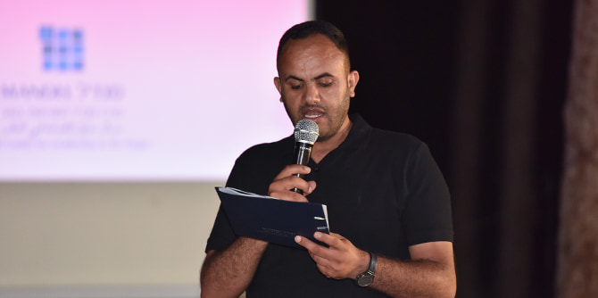

​The Mandel Program for Regional Leadership in Kseifa and Arara BaNegev, a two-year program of in-depth study that began in October 2018, marked its conclusion on July 15, 2020. The graduation ceremony, which took place in the Malachim Forest with total adherence to the Ministry of Health's “Purple Seal” regulations, was moving, meaningful, and full of hope. A booklet of position papers – the result of the practical component of the program – was presented during the ceremony. This booklet will serve as a basis for the graduates’ ongoing work in the Negev.
Led by
Kassim Alsraiha and
Dr. Rotem Bresler-Gonen, the Mandel Program for Regional Leadership in Kseifa and Arara BaNegev was comprised of 14 fellows who live or work in the region of Kseifa and Arara BaNegev, and hold key positions in these localities. The fellows all have a deep familiarity with the region and a strong desire to influence and effect change.
 The booklet of position papers. Click on the image to read (Hebrew).
The booklet of position papers. Click on the image to read (Hebrew).
The practical component of the program, which was one of the major parts of the training, provided the fellows with a framework for expressing and practicing their leadership skills. At the program's concluding ceremony, the fellows presented a booklet of position papers entitled “A Voice from the Field,” which contained the product of the practical component. The booklet is the theoretical and practical result of the group projects that were developed as part of the program. These projects focused on three areas – education, health, and youth in Arab-Bedouin society in the Negev – as follows:
The education group focused on "The Involvement of Parents in Schools." Their exploration reflected the belief that parental involvement has a far-reaching impact on student achievement and on the climate of schools; therefore, increasing parental involvement can bring about profound change not only for students, but also for the school, the parents, and the entire community.
The health group studied health disparities between Jews and Arabs in general and between the general population of Israel and Bedouin society in particular. The group focused upon morbidity rates of diseases that are common in Arab-Bedouin society in the Negev, which affect quality of life and life expectancy. The fellows also investigated the connection between these diseases and the unique lifestyle, culture, and rural way of life of Negev Bedouin society.
The youth group dealt with the needs of young Negev Bedouin in the reality of a changing society. Young people aged 18 to 25 often fall between the cracks in Bedouin society in Israel. Unlike young Jewish Israelis, Bedouin youth do not enlist in the army, and have neither the time nor place to continue to “mature” as young adults and expand their vision of their future as civilians. The participants in this focus group envision integrating young members of the Bedouin community into educational and employment frameworks by creating a support mechanism that will guide them in their adult lives. This group also noted the differences between young men and young women in Bedouin society, and referred to both groups in its position paper.
The three position papers in the booklet reflect the significant learning process that the fellows underwent, and serve as an opportunity for courageous and responsible leaders to make their voices heard, in professional language, by decision-makers and policy-makers. These papers, which address topics that are pertinent and significant for coping with the unique challenges of Arab-Bedouin society in the Negev, proved more relevant than ever during the period of the coronavirus pandemic.
 Kassim Alsraiha, director of the Mandel Program for Regional Leadership in Kseifa and Arara BaNegev
Kassim Alsraiha, the director of the program, said in his address to the graduates: “Anyone who reads the position papers that you prepared after a long process of deliberation, discussion, debate, and even deep value-based disagreements, will be amazed at the quality and importance of the result that was achieved despite the coronavirus pandemic. The product of your studies cannot be taken for granted. Your awareness of the importance of the group projects, and the fact that you forfeited your individual practical projects due to your understanding that the challenges that you addressed were identical – is proof of your leadership, as you put the interests of the group before your personal interests. As the historian Ibn Khaldun put it, ‘Leadership comes only as the result of maturation, and maturation takes place only due to the collective consciousness.’”
Kassim said that the group position papers developed by the fellows were an outgrowth of the concrete work of the individual fellows, which then branched out to broader, more important, and more essential fields of activity. The program’s staff see the position papers as the successful culmination of a journey of learning, and are proud of the courageous thinking of the fellows and of the way that they addressed important topics that reflect real need. They are also proud that the fellows not only described the problems of Arab-Bedouin society in the Negev, but also formulated positions and proposed actual solutions.
Moshe Vigdor, the director general of Mandel Foundation–Israel, addressed the graduates remotely by video. In his inspiring remarks, he spoke of the group’s belonging to the broad Mandel community, reiterated the late Morton Mandel’s vision of working toward an accepting, inclusive, and pluralistic society in the State of Israel, and expressed his great appreciation alongside the hopes that we have regarding our graduates. “Mort Mandel, of blessed memory, created the Mandel Foundation in Israel in 1962 to attract people with the ability, vision, drive, and passion to change and better Israeli society," he said. "Each and every one of you can make changes for the better, each in his or her field – but together this has a cumulative effect that improves life in Israel. We miss Mort Mandel very much these days – his insight, wisdom, initiative, and optimistic vision. He would always tell the graduates who came to thank him: ‘Don’t thank me; I need to thank you because you are doing my work. You will go out into the field and make Israeli society better.’ So on the one hand, we expect quite a lot of you, but in Mort's spirit, we would also like to thank you for the good work that we know you will do.”
 Dr. Adi Nir-Sagi, director of the Mandel Center for Leadership in the Negev
Dr. Adi Nir-Sagi, director of the Mandel Center for Leadership in the Negev
Dr. Adi Nir-Sagi, the director of the Mandel Center for Leadership in the Negev, congratulated the graduates as well. “Your journey of learning has ended. It was a process of in-depth study, analytic thinking, and critical discussion about the challenges of leadership in the Negev. This process required a commitment from each of you, as both a vision and a value: a commitment to improving the quality of life of Arab-Bedouin society in the Negev. The continuation of this process will be seen in your work as graduates of the Mandel Center for Leadership in the Negev in the near future, which will be characterized by commitment and courage.” Adi referred to the fact that the fellows had chosen to conceptualize complex issues while looking into traditional values and searching for alternatives that create change. She also spoke of the sad loss this year of Mr. Mandel, founder of the Mandel Foundation, who saw each individual fellow as an illustration of his mantra "It's all about who.” As he said, "Even one person can change the world. Powerful ideas, driven by outstanding people, represent a sure way to light more candles and illuminate the world.” Adi emphasized her great faith in each of the graduates and the hope that they will continue to engage in work that will change the world, for the betterment of the community and society of the Negev.
The graduates expressed their gratitude to the Mandel Foundation and to the Mandel Center for Leadership in the Negev for giving them the opportunity to undergo this profound and significant process. They said that for them, the conclusion of the program was not the end of the road, but closed a cycle in which they came full circle, and marked the beginning of their journey of change and action in the Negev.
{kind=link}